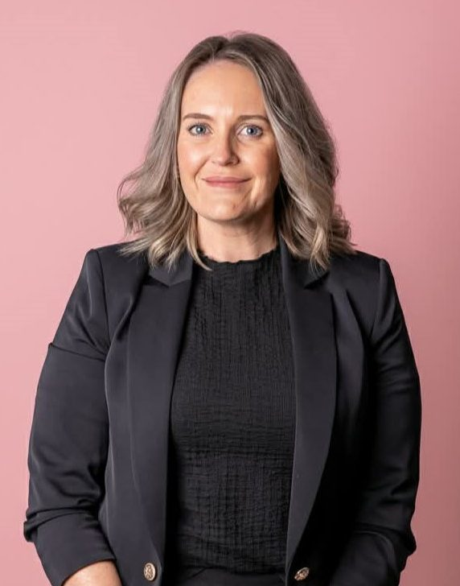
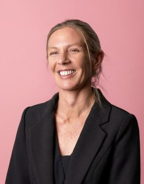
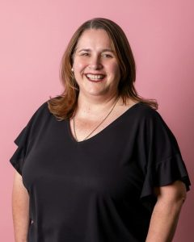
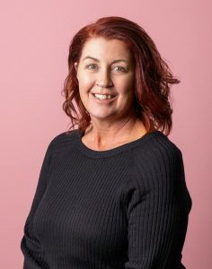

Meet The 2026 Business Women Albury Wodonga Core Committee

Jess is committed to upskilling, motivating and empowering the Albury Wodonga business community while fostering an inclusive environment for women across all industries and career stages.
As NSW Regional Manager at BUSY At Work, Jess leads a statewide team supporting local employers. With over 15 years of experience across management, recruitment and local government—plus co-running a family construction business—she brings practical insight into small business ownership to support local growth.
See MoreJess Vlaskic
Chair
Lisa is a qualified insolvency practitioner—a rare credential among women in Australia—and Director of CB Debt Consultancy, which she established over 15 years ago. She is passionate about guiding individuals through financial hardship while prioritising their mental health and wellbeing, helping them find practical solutions during their most challenging times.
Outside of work, Lisa enjoys travelling, socialising and cheering on the St Kilda Football Club. She joined Business Women Albury Wodonga to foster meaningful connections, collaboration and mentorship, empowering women across the community to thrive personally and professionally.
See MoreLisa Grey
Deputy ChairMelinda is an experienced financial adviser with over a decade in wealth management, investment planning and client-centred strategies. As a BWAW committee member, she is dedicated to empowering women, supporting women-led businesses and fostering a collaborative environment where leaders can learn and grow.
Outside of work, Melinda enjoys spending time with family and friends, attending concerts and contributing to community projects.
See MoreMel Harmer
Deputy ChairAngela is a Recruitment Officer at Intereach Albury and owner of Sisley Services, an events business. Outside of work, she enjoys socialising, spending time with family and walking her dog, Eddie.
Angela joined the BWAW Committee to support local women in business through welcoming opportunities for connection and growth.
See MoreAngela Larkin

Jenn is a rural marketing expert, podcaster, speaker and founder of Social Media and Marketing Australia. She hosts the top-ranked Small Business Made Simple podcast and co-founded Spend With Us, a regional marketplace that has injected over $10 million into the rural economy.
Jenn serves on the boards of The Rural Woman and Greatest Good. She brings her community-first approach to the BWAW Committee to support regional business owners.
See MoreJenn Donovan

Judie brings over 30 years of experience in corporate account management and leadership to the BWAW Committee. A passionate entrepreneur, she co-owns Hair and Beauty Solutions and Studio Margot & Co., while also managing key workforce development relationships at BUSY At Work.
As a dedicated mother and active community advocate, Judie brings her high energy and resilience to empower and build a strong support network for local women in business.
See MoreJudie Hudson
Join the BWAW committee
Members of the Albury-Wodonga business community are welcome to apply.
Join the BWAW Committee to grow personally and professionally, build leadership skills and make a meaningful contribution to our community.
Build experience and connections alongside people who want to make a difference. Your contribution helps shape a supportive future for women in business.
- Help deliver our monthly networking events.
- Attend monthly committee meetings and follow through on agreed actions.
- Take on a role and contribute to the organisation’s work.
- Represent BWAW at Business Wodonga, Albury Business Connect and Young Business Edge events.
Applications are closed